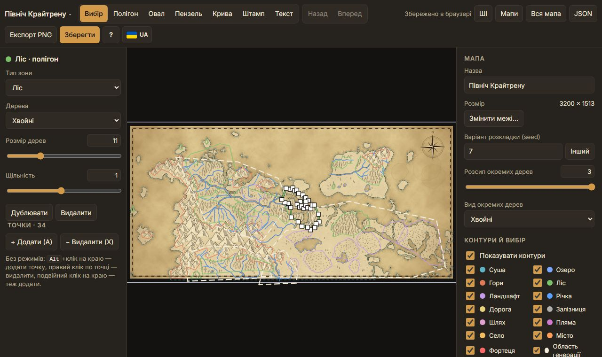
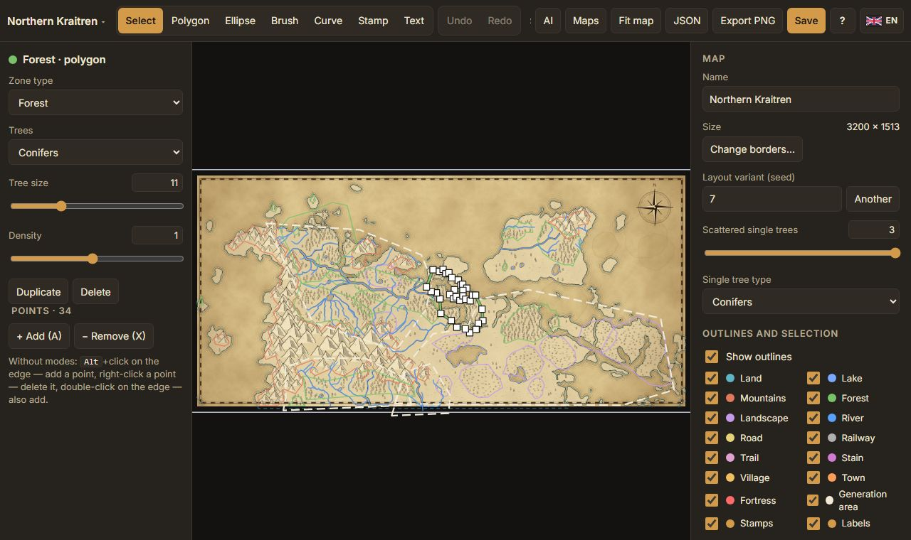
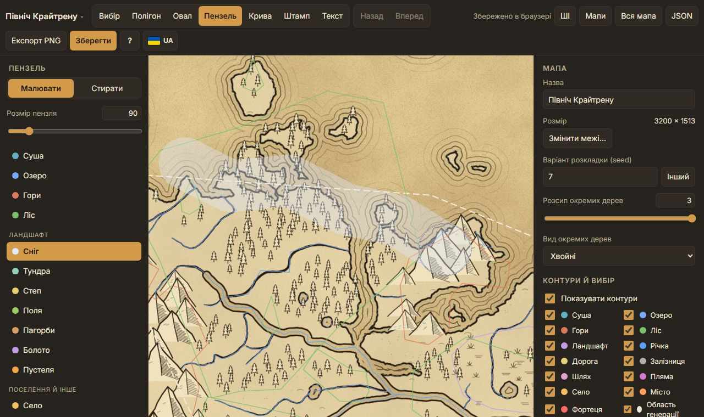
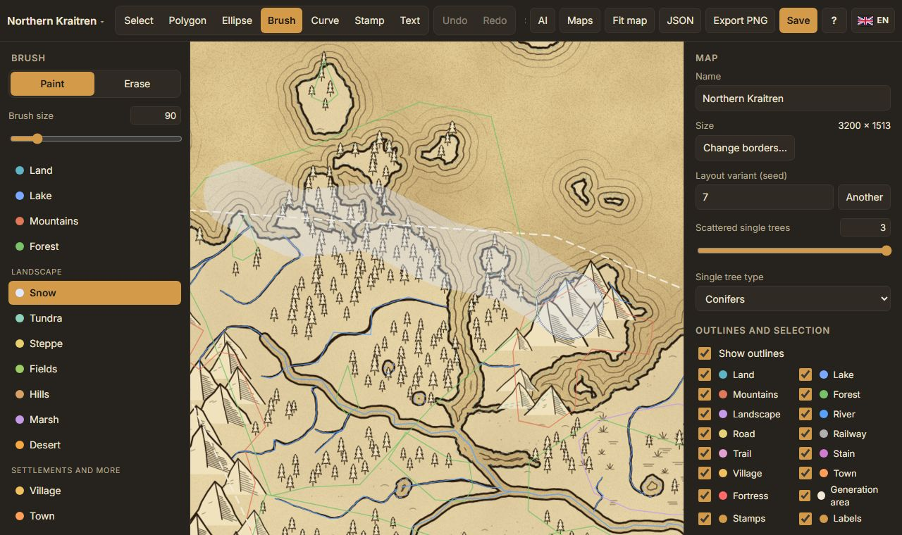
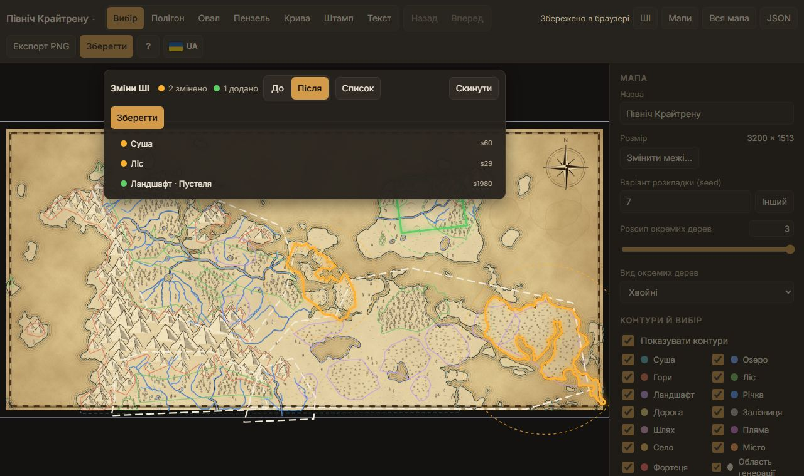
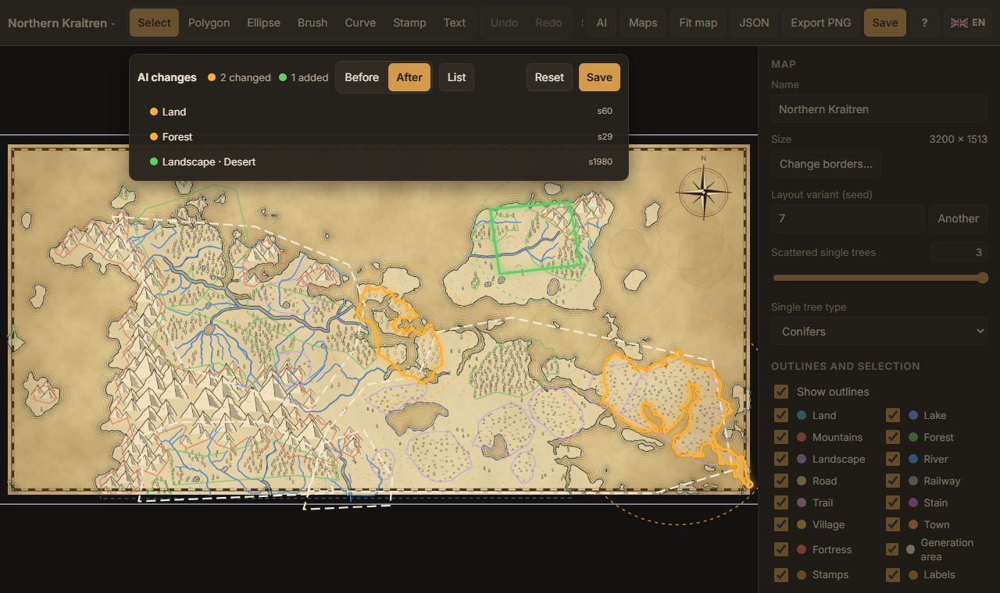

Перемальовую…

Оберіть мову · Choose your language
Створити нову мапу
Оберіть шаблон — назву й розмір уточните на наступному кроці.
Мапи зберігаються лише у вашому браузері й ваших файлах.
Скопіюйте, щоб зберегти резервну копію, або вставте сюди JSON і натисніть «Завантажити».
Мапи зберігаються автоматично в цьому браузері. Для резервної копії чи перенесення на інший комп’ютер — «У файл».
Межі можна змінити будь-коли: бічна панель → «Змінити межі…».
Скільки пікселів додати з кожного боку. Від’ємне число обрізає. Нова площа — море, малюйте на ній що завгодно. Мапу можна рухати й масштабувати, поки вікно відкрите.
Об’єкти за новими межами не видаляються: якщо потім розширити мапу назад, вони повернуться. Скасувати — Ctrl+Z.
Опишіть зміни, скопіюйте запит і дайте його будь-якому ШІ (Claude, ChatGPT, Gemini, локальна модель). Відповідь вставте нижче — побачите «до / після» і вирішите, зберегти чи скинути.
Оберіть шаблон — назву й розмір уточните на наступному кроці.


1234

Вид дерев обирається в налаштуваннях лісу, ландшафт — у списку «Що малювати». Позначки ставляться лише на суші й обходять річки, дороги та поселення.
Pick the tree type in the forest settings, the landscape in the “What to draw” list. Marks appear only on land and avoid rivers, roads and settlements.


| V | Вибір |
| P | Полігон |
| O | Овал |
| B | Пензель |
| R / D | Крива (річка, дорога…) |
| S | Штамп |
| T | Текст |
| Enter / подвійний клік | Завершити полігон чи криву |
| Esc | Скасувати малювання, зняти вибір |
| Shift | Без прилипання точок (крива) |
| [ ] | Розмір пензля |
| Alt + мазок | Стирати пензлем |
| Alt + клік | Додати точку на краю вибраної фігури |
| A / X | Режим «додати / видалити точки» |
| Delete | Видалити вибране або вибрану точку |
| Ctrl+Z | Назад |
| Ctrl+Shift+Z / Ctrl+Y | Вперед |
| Ctrl+S | Зберегти у файл (Ctrl+Shift+S — у новий) |
| Ctrl+O | Відкрити файл як нову мапу |
| Пробіл + тягнути | Рухати мапу (як і тягнути порожнє місце) |
| Колесо | Масштаб |
| C | Порівняння змін ШІ: до / після |
| F1 / ? | Ця довідка |
| V | Select |
| P | Polygon |
| O | Ellipse |
| B | Brush |
| R / D | Curve (river, road…) |
| S | Stamp |
| T | Text |
| Enter / double-click | Finish a polygon or curve |
| Esc | Cancel drawing, deselect |
| Shift | No point snapping (curve) |
| [ ] | Brush size |
| Alt + stroke | Erase with the brush |
| Alt + click | Add a point on the edge of the selected shape |
| A / X | “Add / remove points” mode |
| Delete | Delete the selection or the selected point |
| Ctrl+Z | Undo |
| Ctrl+Shift+Z / Ctrl+Y | Redo |
| Ctrl+S | Save to file (Ctrl+Shift+S — to a new one) |
| Ctrl+O | Open a file as a new map |
| Space + drag | Pan the map (like dragging empty space) |
| Wheel | Zoom |
| C | AI changes: before / after |
| F1 / ? | This help |